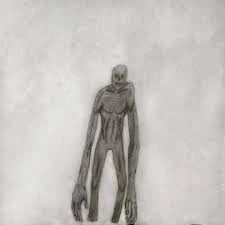

黑夜中，它静静地凝视着你，悄无声息地移动到你的身旁，你求生的时间已经所剩无几......
“黯人”，是后室中臭名昭著的敌对实体，在后室分布十分广泛。“黯人”常常栖居于楼层的阴暗部分，它们攻击性极强，流浪者应不惜一切代价避开它们。
就外表而言，“黯人”是一种高大黝黑的类人实体，但没有人类的面部特征；尽管如此，其面部有着凹陷的空腔，可能来源于其原有的眼睛和嘴，但不知为何变得畸形，这可能与其溶解的脸有关。有着如此残缺扭曲的面部器官，却有十足的证据证明其有着清晰的视觉、敏锐的听觉与灵敏的嗅觉，甚至可以在不受任何外界干扰的情况下穿梭于黑暗中，这一切关于“黯人”的谜团尚未得到定论。
虽然每只“黯人”的身高、样貌以及其表现出的行为均有所不同，但它们大体上总是相同的。“黯人”的皮肤是黝黑的，皮肤布满褶皱，有时撕裂，有时爆开，隐隐约约地露出其深紫色的肌肉，肌肉同样十分不平整，多以不同的样式扭曲分布于皮肤下方。尽管如此，但大多数的“黯人”总比流浪者强壮得多——它们能轻易折断流浪者的骨头；它们同样比流浪者睿智得多，“黯人”会通过心理或感觉折磨受害者；并造成受害者产生创伤后应激障碍。如果没有逃脱“黯人”的魔爪，它们将继续折磨会受害者，为了防止他们逃跑，“黯人”会想方设法使受害者失去行动能力，最终以一种残忍的手段杀死受害者。
如前所述，“黯人”是一种敌对实体，它能产生一种幻象，使流浪者产生幻觉，有时甚至能扭曲现实。
据报告所述，流浪者常常会注意到潜伏于身边的“黯人”，并好奇“黯人”接下来的行为与行踪。但就事实而言，这只是“黯人”为了诱骗流浪者上钩而做出的伪装。因此，许多流浪者会在追踪“黯人”的过程中产生幻觉：其周围的环境将开始变化，但真实环境却不会消失；流浪者心底的恐惧和恐惧与痛楚将被唤醒。幻觉环境中常常出现大量的尸体与彻骨的风暴，在此情形下，环境是绝对黑暗的。
此外，“黯人”拥有卡入卡出的能力，这允许它们在楼层间自由穿梭。同时，“黯人”还具备局部卡入卡出的能力，这是它们在追捕流浪者时绝对的优势。举例而言，如果一只“黯人”在一堵墙的一边，而一位流浪者在这堵墙的另一边，那么“黯人”将手臂卡出墙外，轻而易举地抓住流浪者。
人们普遍认为“黯人”猎杀流浪者仅仅是为了取乐；但很快这一观点就遭到了驳斥——当“黯人”饥渴时，它们会迅速杀死抓获的流浪者，而非折磨他们。“黯人”是十足狡黠的猎手，它们会伺机而动，一击即获。然而，由于相关信息的匮乏，目前并不能完全肯定“黯人”的攻击目的。但已知的是，“黯人”通常独自狩猎，但有时它们也会团结协作，共同狩猎。
它那可怖的、扭曲的身体......
如上所述，“黯人”皮肤黝黑、皮肤上布满皱纹；身体扭曲、细长；平均身高约为2米。
有些“黯人”的体型正常，有些则比树还高大、比流浪者还矮小。它们的身体是扭曲可怖的，一部分“黯人”甚至会突变：它们会变异出多余的肢体；变异得更硕大，局部“器官”会变得修长......
“黯人”的皮肤下有着紫色的肌肉。
就现实来说，虽然对于“黯人”的肌肉知之甚少，但可以肯定的是——这些肌肉有着超自然的特性，是“黯人”速度与力量的来源。
“黯人”的某些亚种具有灰色的人形外观，它们可以融化和固化自己的身体，这意味着只要在一定的大小限度内，它们可以变成任何东西。
有报道称，流浪者看到了不同样貌的“黯人”，有说是一种鼻涕虫状的生物；
有说是一种体型较大的昆虫。少数“黯人”的体色可能比深灰色更浅或更深，但多数“黯人”的体色仍是深灰色。
看见蛰伏的“黯人”大声尖叫，这会暴露自己的位置，更快引来“黯人”的攻击；
感性认识、感到恐慌；
沉溺于幻觉。
保持坚强的意志；
正视过去的苦难，直面恐惧，这能显著降低侵害；
做足应对幻觉的准备；
假装无视蛰伏的“黯人”；
坚信能够摆脱幻觉的困境，以上措施有助于提高生存几率。
“黯人”的首次目击报告来源于两名流浪者在探索未知的楼层时的遭遇。
二人发现了一个漆黑的水坑。一人踏在水坑上，但旋即就被吸入水中。
紧接着一只“黯人”从水坑里浮起，另一人见状立刻逃离，最终下落不明。